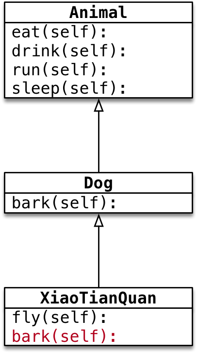
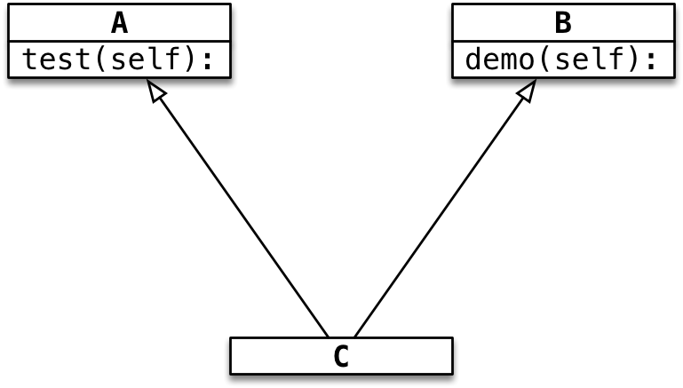

继承
目标
- 单继承
- 多继承
面向对象三大特性
- 封装 根据 职责 将 属性 和 方法 封装 到一个抽象的 类 中
- 继承 实现代码的重用，相同的代码不需要重复的编写
- 多态 不同的对象调用相同的方法，产生不同的执行结果，增加代码的灵活度
01. 单继承
1.1 继承的概念、语法和特点
继承的概念：子类 拥有 父类 的所有 方法 和 属性

1) 继承的语法
1 | class 类名(父类名): |
- 子类 继承自 父类，可以直接 享受 父类中已经封装好的方法，不需要再次开发
- 子类 中应该根据 职责，封装 子类特有的 属性和方法
2) 专业术语
Dog类是Animal类的子类，Animal类是Dog类的父类，Dog类从Animal类继承Dog类是Animal类的派生类，Animal类是Dog类的基类，Dog类从Animal类派生
3) 继承的传递性
C类从B类继承，B类又从A类继承- 那么
C类就具有B类和A类的所有属性和方法
子类 拥有 父类 以及 父类的父类 中封装的所有 属性 和 方法
提问
哮天犬 能够调用 Cat 类中定义的 catch 方法吗？
答案
不能，因为 哮天犬 和 Cat 之间没有 继承 关系
1.2 方法的重写
- 子类 拥有 父类 的所有 方法 和 属性
- 子类 继承自 父类，可以直接 享受 父类中已经封装好的方法，不需要再次开发
应用场景
- 当 父类 的方法实现不能满足子类需求时，可以对方法进行 重写(override)

重写 父类方法有两种情况：
- 覆盖 父类的方法
- 对父类方法进行 扩展
1) 覆盖父类的方法
- 如果在开发中，父类的方法实现 和 子类的方法实现，完全不同
- 就可以使用 覆盖 的方式，在子类中 重新编写 父类的方法实现
具体的实现方式，就相当于在 子类中 定义了一个 和父类同名的方法并且实现
重写之后，在运行时，只会调用 子类中重写的方法，而不再会调用 父类封装的方法
2) 对父类方法进行 扩展
如果在开发中，子类的方法实现中包含父类的方法实现
- 父类原本封装的方法实现 是 子类方法的一部分
就可以使用扩展的方式
- 在子类中 重写 父类的方法
- 在需要的位置使用
super().父类方法来调用父类方法的执行 - 代码其他的位置针对子类的需求，编写 子类特有的代码实现
关于 super
- 在
Python中super是一个 特殊的类 super()就是使用super类创建出来的对象- 最常 使用的场景就是在 重写父类方法时，调用 在父类中封装的方法实现
调用父类方法的另外一种方式（知道）
在
Python 2.x时，如果需要调用父类的方法，还可以使用以下方式：
1 | 父类名.方法(self) |
- 这种方式，目前在
Python 3.x还支持这种方式 - 这种方法 不推荐使用，因为一旦 父类发生变化，方法调用位置的 类名 同样需要修改
提示
- 在开发时，
父类名和super()两种方式不要混用 - 如果使用 当前子类名 调用方法，会形成递归调用，出现死循环
1.3 父类的 私有属性 和 私有方法
- 子类对象 不能 在自己的方法内部，直接 访问 父类的 私有属性 或 私有方法
- 子类对象 可以通过 父类 的 公有方法 间接 访问到 私有属性 或 私有方法
- 私有属性、方法 是对象的隐私，不对外公开，外界 以及 子类 都不能直接访问
- 私有属性、方法 通常用于做一些内部的事情
示例

B的对象不能直接访问__num2属性B的对象不能在demo方法内访问__num2属性B的对象可以在demo方法内，调用父类的test方法- 父类的
test方法内部，能够访问__num2属性和__test方法
02. 多继承
概念
- 子类 可以拥有 多个父类，并且具有 所有父类 的 属性 和 方法
- 例如：孩子 会继承自己 父亲 和 母亲 的 特性

语法
1 | class 子类名(父类名1, 父类名2...) |
2.1 多继承的使用注意事项
问题的提出
- 如果 不同的父类 中存在 同名的方法，子类对象 在调用方法时，会调用 哪一个父类中的方法呢？
提示：开发时，应该尽量避免这种容易产生混淆的情况！ —— 如果 父类之间 存在 同名的属性或者方法，应该 尽量避免 使用多继承

Python 中的 MRO —— 方法搜索顺序（知道）
Python中针对 类 提供了一个 内置属性__mro__可以查看 方法 搜索顺序- MRO 是
method resolution order，主要用于 在多继承时判断 方法、属性 的调用 路径
1 | print(C.__mro__) |
输出结果
1 | (<class '__main__.C'>, <class '__main__.A'>, <class '__main__.B'>, <class 'object'>) |
- 在搜索方法时，是按照
__mro__的输出结果 从左至右 的顺序查找的 - 如果在当前类中 找到方法，就直接执行，不再搜索
- 如果 没有找到，就查找下一个类 中是否有对应的方法，如果找到，就直接执行，不再搜索
- 如果找到最后一个类，还没有找到方法，程序报错
2.2 新式类与旧式（经典）类
object是Python为所有对象提供的 基类，提供有一些内置的属性和方法，可以使用dir函数查看
- 新式类：以
object为基类的类，推荐使用 - 经典类：不以
object为基类的类，不推荐使用 - 在
Python 3.x中定义类时，如果没有指定父类，会 默认使用object作为该类的 基类 ——Python 3.x中定义的类都是 新式类 - 在
Python 2.x中定义类时，如果没有指定父类，则不会以object作为 基类
新式类 和 经典类 在多继承时 —— 会影响到方法的搜索顺序
为了保证编写的代码能够同时在 Python 2.x 和 Python 3.x 运行！
今后在定义类时，如果没有父类，建议统一继承自 object
1 | class 类名(object): |